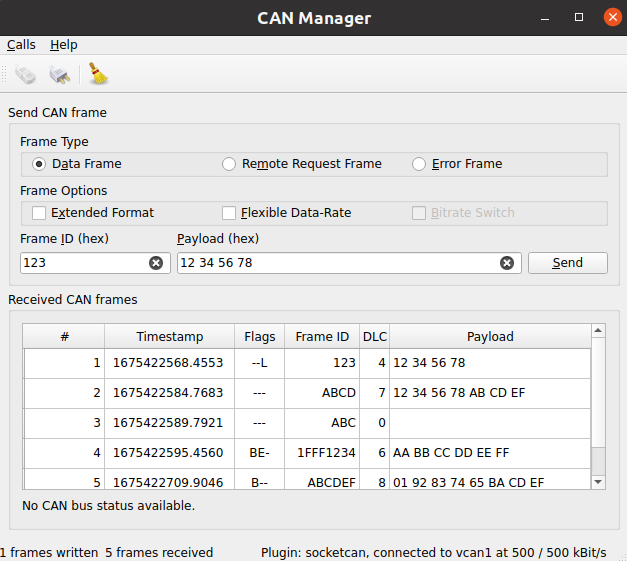

CAN Bus Manager
The example sends and receives CAN bus frames.
The example sends and receives CAN bus frames. Incoming frames are ordered according to their type. A connect dialog is provided to adjust the CAN Bus connection parameters.
Key Qt Serial Bus classes used in this example:

Creating a QCanBusDevice
An instance of QCanBusDevice is required to perform any CAN communication.
The ConnectDialog allows to specify all the required parameters. After that the device is created using the provided plugin and interface names:
QString errorString;
m_canDevice.reset(QCanBus::instance()->createDevice(p.pluginName, p.deviceInterfaceName,
&errorString));
connect(m_canDevice.get(), &QCanBusDevice::errorOccurred,
this, &MainWindow::processErrors);
connect(m_canDevice.get(), &QCanBusDevice::framesReceived,
this, &MainWindow::processReceivedFrames);
connect(m_canDevice.get(), &QCanBusDevice::framesWritten,
this, &MainWindow::processFramesWritten);
The established connections allow to process incoming frames, control the sent frames and handle errors.
When the device is created, use QCanBusDevice::connectDevice() to start the communication.
Processing Incoming Frames
QCanBusDevice emits a framesReceived() signal when new frames are available. The readFrame() method can be used to read a single QCanBusFrame while there are available frames. Once the frame is received, individual parameters such as frameId, timeStamp, or payload can be extracted from it:
while (m_canDevice->framesAvailable()) {
m_numberFramesReceived++;
const QCanBusFrame frame = m_canDevice->readFrame();
QString data;
if (frame.frameType() == QCanBusFrame::ErrorFrame)
data = m_canDevice->interpretErrorFrame(frame);
else
data = QString::fromLatin1(frame.payload().toHex(' ').toUpper());
const QString time = QString::fromLatin1("%1.%2 ")
.arg(frame.timeStamp().seconds(), 10, 10, ' '_L1)
.arg(frame.timeStamp().microSeconds() / 100, 4, 10, '0'_L1);
const QString flags = frameFlags(frame);
const QString id = QString::number(frame.frameId(), 16).toUpper();
const QString dlc = QString::number(frame.payload().size());
m_model->appendFrame(QStringList({QString::number(m_numberFramesReceived),
time, flags, id, dlc, data}));
}
Sending Frames
To send custom data over the CAN bus, the user needs to provide at least a frameId and a payload. Optionally other QCanBusFrame parameters can be configured:
const uint frameId = m_ui->frameIdEdit->text().toUInt(nullptr, 16);
QString data = m_ui->payloadEdit->text();
m_ui->payloadEdit->setText(formatHexData(data));
const QByteArray payload = QByteArray::fromHex(data.remove(u' ').toLatin1());
QCanBusFrame frame = QCanBusFrame(frameId, payload);
frame.setExtendedFrameFormat(m_ui->extendedFormatBox->isChecked());
frame.setFlexibleDataRateFormat(m_ui->flexibleDataRateBox->isChecked());
frame.setBitrateSwitch(m_ui->bitrateSwitchBox->isChecked());
if (m_ui->errorFrame->isChecked())
frame.setFrameType(QCanBusFrame::ErrorFrame);
else if (m_ui->remoteFrame->isChecked())
frame.setFrameType(QCanBusFrame::RemoteRequestFrame);
Once the frame is prepared, the QCanBusDevice::writeFrame() method can be used to send it:
m_canDevice->writeFrame(frame);
Running the Example
To run the example from Qt Creator, open the Welcome mode and select the example from Examples. For more information, visit Building and Running an Example.